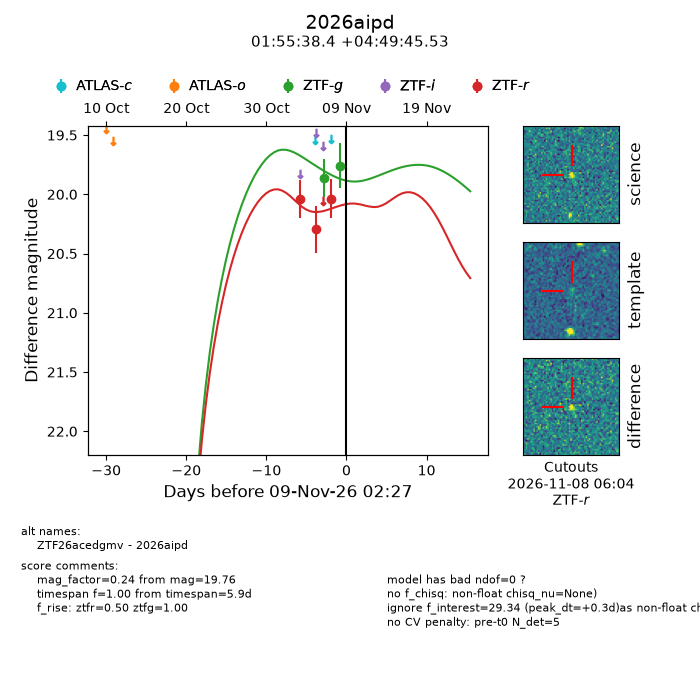
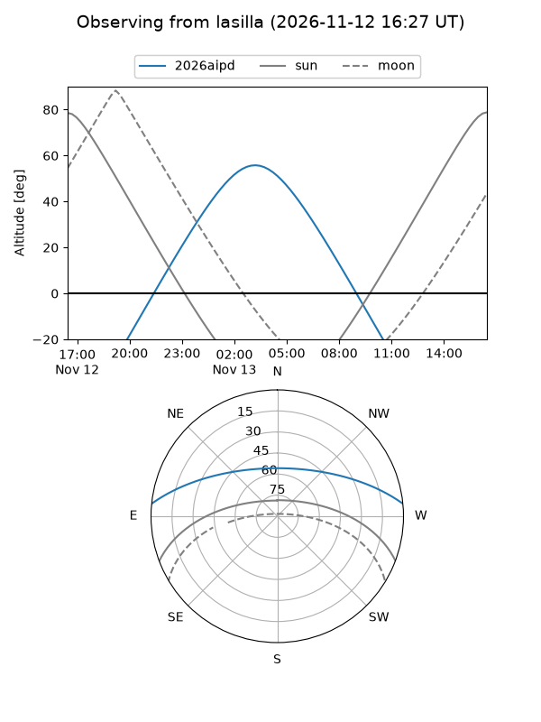
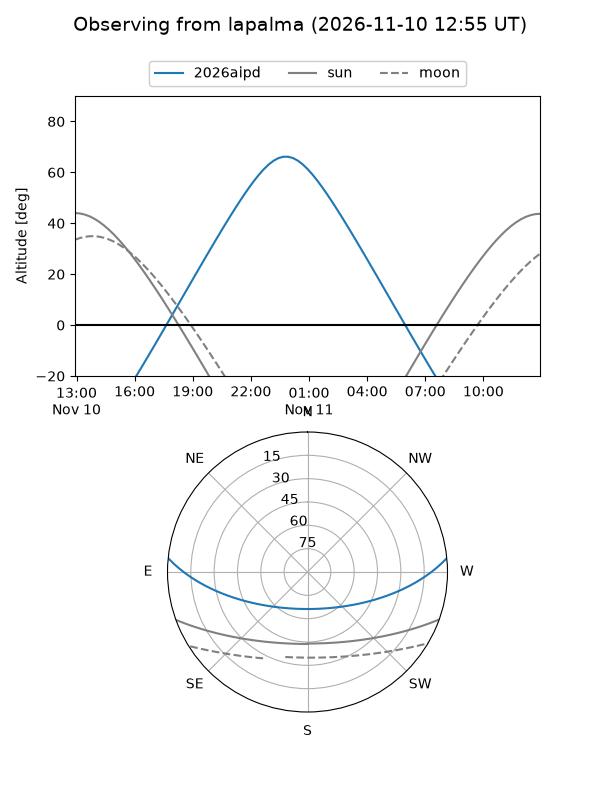
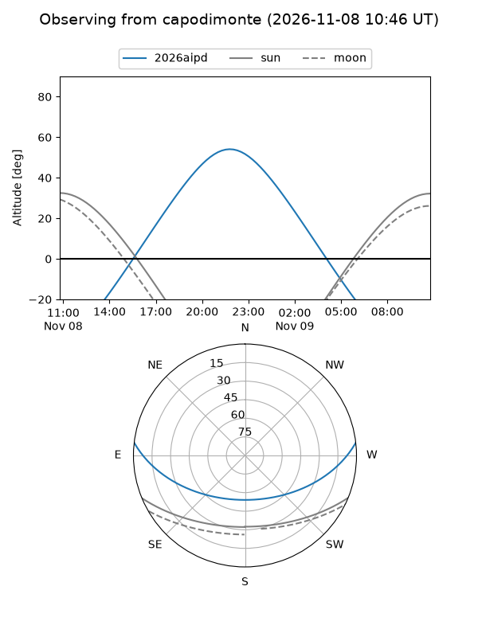
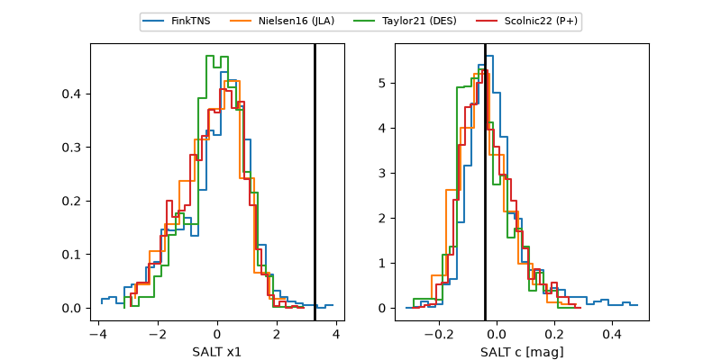

2026aipd
Target 2026aipd at 2026-11-09 02:29
Aliases and brokers:
FINK-ZTF: ztf.fink-portal.org/ZTF26acedgmv
Lasair-ZTF: lasair-ztf.lsst.ac.uk/objects/ZTF26acedgmv
ALeRCE-ZTF: alerce.online/object/ZTF26acedgmv
YSE-PZ: ziggy.ucolick.org/yse/transient_detail/2026aipd
TNS name: wis-tns.org/object/2026aipd
Direct TNS query: direct search
alt names
ZTF26acedgmv (ztf,fink_ztf)
2026aipd (tns,yse)
Coordinates:
equatorial (ra, dec) = 28.9100,+4.82931
equatorial (HMS+DMS) = 01:55:38.39,+04:49:45.53
galactic (l, b) = (151.2359,-54.47582)
Flags:
peak dt: +0.3
Photometry:
last ztfg=19.76, ztfr=20.04
2 ztfg, 3 ztfr detections
Lightcurve

Visibility



Additional plots
